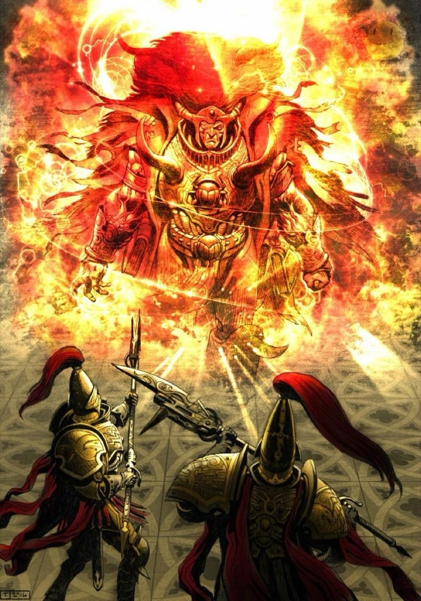

Folly of Magnus
| Folly of Magnus | |
|---|---|
| Prelude to the Horus Heresy | |
 The astral form of Magnus the Red breaks into the Imperial Palace before the Emperor's Custodians Artwork © Games Workshop | |
| Date | 004.M31 |
| Location | Prospero and the Imperial Palace, Terra |
| Cause | Magnus's vision of Horus's fall to Chaos and his decision to warn the Emperor by sorcery |
| Result | Psychic wards over the Palace and the Imperial Webway broken; daemons enter the Webway; the Emperor bound to the Golden Throne |
| Consequences | Webway War; the Censure of Magnus; the Burning of Prospero; the Thousand Sons pass to Chaos |
| Participants | |
| Magnus the Red · Thousand Sons · Emperor of Mankind · Tzeentch · Adeptus Custodes · Sisters of Silence · Adeptus Mechanicus · Leman Russ · Horus | |
The Folly of Magnus, also the Folly of Magnus the Red, was the act by which Magnus the Red, primarch of the Thousand Sons, cast a sorcerous warning across the Warp to Terra in 004.M31. He had seen that Horus, the Warmaster, was lost to Chaos. His message reached the Emperor, but it passed through the psychic wards of the Imperial Palace and broke the shield that guarded the Emperor's secret Imperial Webway beneath it.[1][2]
Through the breach, daemons entered the human passages of the Webway and killed the Mechanicum adepts who laboured there. The Emperor's great design was ruined, and he was bound to the Golden Throne to hold the gate closed. Imperial scholars name the act a folly because the warning was true, and because every result it had was one Magnus had not intended.[1][2]
The Emperor took the message as a second breach of the edicts of Nikaea, and Magnus was condemned. The Space Wolves were sent to Prospero, a message from the Sons of Horus turned their errand from arrest to destruction, and the world burned. The Webway War that the breach began lasted the greater part of the Heresy.[3][4]
Background
[edit]Magnus and the ban on sorcery
[edit]Magnus was the most gifted psyker of all the primarchs. He was raised on Prospero among its sorcerer cults, was found by the Emperor in 840.M30, and promised on that day to give up sorcery. In secret he did not, and he taught his Legion the same arts. He also helped to shape the Librarius of the Legions, which the other primarchs distrusted.[2][5]
The quarrel was settled at the Council of Nikaea in 001.M31. Mortarion accused Magnus of the sorcery practised by the overlords of Barbarus. The Emperor ruled that the Legions were to use no psykers outside the sanctioned Navigators and astropaths, that the Librarius of each Legion was to be disbanded, and that Magnus was to return to Prospero and put his Legion in order.[2][6]
The Webway project
[edit]Before the Council the Emperor had named Horus Warmaster at Ullanor in 000.M31 and left the Great Crusade to him. He returned to Terra to resume his Great Work, the Imperial Webway Project, beneath the Palace. Its aim was a human gate into the Aeldari Webway, so that every world might be reached without the Warp and the Imperium would no longer depend on Navigators or astropaths for travel and word.[1][7]
The human-built gate and conduit had no natural shield. The Emperor held a psychic sheath around them himself, and tens of thousands of Mechanicum adepts worked under the Palace over several centuries to prepare it. The project was a secret known to very few.[1][8]
The warning
[edit]The vision and the ritual
[edit]
In 004.M31, meditating on Prospero, Magnus saw Horus's corruption and the civil war that would divide the Imperium. The one fate his vision did not show him was his own. He reached out to Horus, but the Warmaster had already been struck down on Davin and lay near death.[2][3]
Astropathy, the lawful means, was slow. Magnus gathered the sorcerers of his cabal and chose to send the warning himself. He cast his spirit through the Warp toward Terra.[3][9]
The breach
[edit]Between the Warp and Terra, Magnus found a corridor of the Webway leading to the Palace, but its barrier would not yield. A voice offered him strength. Magnus took it, and the barrier gave way. The voice was that of Tzeentch, the Architect of Fate, as Magnus learned afterwards.[2][6]
His spirit burst into the Emperor's throne room and struck the wards laid round the Palace. They broke. The shield around the Terran Webway gate broke with them, and great rifts opened in it. The creatures of the Warp passed through the rifts into the human tunnels and killed the adepts and servitors at work there, in numbers Imperial records put at hundreds, or thousands in the older accounts.[3][1]
The warning itself was heard. The Emperor, who knew the taint of Warp craft, did not accept it. Imperial accounts say he saw in it a proof of Magnus's breach of the Nikaean ban, and no truth about Horus.[3][2]
Consequences
[edit]The Emperor on the Throne
[edit]The Terran gate stayed shut only while the Emperor powered its shield from the Golden Throne above it. Only the strongest of other psykers could stand in for him briefly, and only the Emperor could keep the gate closed for good. From 004.M31 the Throne was therefore both his seat and his prison.[1][10]
Malcador the Sigillite took his place on it when the Emperor rose to face Horus during the Siege of Terra, and the burden consumed him. The wounded Emperor was afterwards returned to the Throne, which Rogal Dorn had the adepts of the Mechanicum turn into a life-support engine. The Emperor has not left it since.[1][11]
The Webway War
[edit]The Adeptus Custodes and the Sisters of Silence entered the Imperial Webway to stop the daemonic incursion. Their sacrifice kept the hosts of the Warp from the soil of Terra, and the secret war went on beneath the Palace for the rest of the Heresy. The Imperial dates for it are c. 004–014.M31, from the breach to the end of the Siege.[1][7]
The cost was permanent. The Emperor's plan to free humanity from the Warp was abandoned. The Imperium has relied on Navigators and astropaths ever since, and the existence of the Imperial Webway was known for ten thousand years to the Custodians and a few others.[1][10]
Censure of Magnus and the Burning of Prospero
[edit]The Emperor was furious. Magnus had broken the decrees of Nikaea, and in doing so had damaged the project the Emperor held dearest. He did not suspect Horus, whom he loved. He ordered Leman Russ, the primarch of the Space Wolves, who had long distrusted sorcery, to bring Magnus to Terra to answer for it.[3][2]
The Space Wolves sailed with a contingent of the Custodians, a vigil of the Sisters of Silence and units of the Imperial Army. On the way, a message from the Sons of Horus reached Russ. Its text is not recorded, but Russ came to Prospero meaning to kill Magnus, not capture him, and Imperial accounts hold that Horus, as Warmaster, carried the Emperor's authority and was believed.[4][12]
Magnus came to understand that he had been used. Returned to his body on Prospero, he received the vision of Tzeentch that told him his fate lay with the Ruinous Powers. He veiled his world, sent his fleet away and did not defend it. In 004.M31 the Space Wolves razed Tizca and broke Magnus in the final duel. Tzeentch carried the survivors and the city to the Eye of Terror, and the Thousand Sons took the side of Horus.[3][4]
Part of Magnus's soul was torn from him in the Warp. The Shard of Terra, which held his nobler virtues, was said to have been taken by Malcador the Sigillite and kept on Terra, and the corrupted primarch later swore that his Legion would march on the Throne world to take it back.[6][12]
Assessment
[edit]Imperial scholars judge the Folly harshly. It was sorcery, a breach of the Nikaean ban, and its price was the Webway project. Yet the warning was accurate, and the Emperor's refusal to credit it was his own.[1][5]
Most agree on two points. The entity that lent Magnus strength took more than it gave, and the harm to the Webway was real whatever his motive.[3][2]
Timeline
[edit]| Date | Event |
|---|---|
| 840.M30 | The Emperor finds Magnus on Prospero and receives his promise to renounce sorcery. |
| 000.M31 | The Emperor names Horus Warmaster at Ullanor and returns to Terra to resume the Webway project. |
| 001.M31 | The Council of Nikaea forbids sorcery in the Legions. |
| 004.M31 | Magnus sees Horus's fall and casts his warning; the wards over the Palace and the Imperial Webway break. |
| 004.M31 | The Emperor takes the Golden Throne; the Webway War begins; Leman Russ is sent to Prospero. |
| 004.M31 | The Burning of Prospero; the Thousand Sons pass to the Eye of Terror. |
| c. 009.M31 | The main fighting in the Webway ends and the Imperial forces withdraw to the gate.[a] |
| 014.M31 | Malcador the Sigillite takes the Throne during the Siege of Terra; the Emperor is entombed in it afterwards. |
See also
[edit]Notes
[edit]- ^ Date estimated from the sequence of events, as in the article on the Webway War.
References
[edit]- ^ a b c d e f g h i j "Imperial Webway". Warhammer 40k Wiki (Fandom).
- ^ a b c d e f g h i Bligh, Alan. The Horus Heresy, Book Seven: Inferno (Forge World series). pp. 22-32, 38, 65.
- ^ a b c d e f g h McNeill, Graham. A Thousand Sons (novel). Black Library. pp. 225-226, 228-229, 230, 236, 241, 244, 255-259, 262-263.
- ^ a b c Abnett, Dan. Prospero Burns (novel). Black Library. pp. 339, 342-343, 350-351, 353-355.
- ^ a b Index Astartes III, "Masters of Forbidden Knowledge: The Thousand Sons Space Marine Legion". pp. 62-69.
- ^ a b c Gathering Storm, Part Three: Rise of the Primarch (7th edition). Games Workshop. pp. 49, 72-85.
- ^ a b Codex: Drukhari (8th edition), "A Galaxy in Shadow". Games Workshop. p. 11.
- ^ Codex: Dark Eldar (5th edition). Games Workshop. pp. 6-8, 20.
- ^ McNeill, Graham. The Outcast Dead (novel). Black Library.
- ^ a b Watson, Ian. Chaos Child (novel). Black Library. Sanders, Rob. Atlas Infernal (novel). Black Library.
- ^ Horus Heresy: Collected Visions (art book). Games Workshop. pp. 322, 324, 326, 328, 350-351, 359-361.
- ^ a b Wraight, Chris. "Rebirth", in Dunn, Christian (ed.), Age of Darkness (anthology). Black Library.